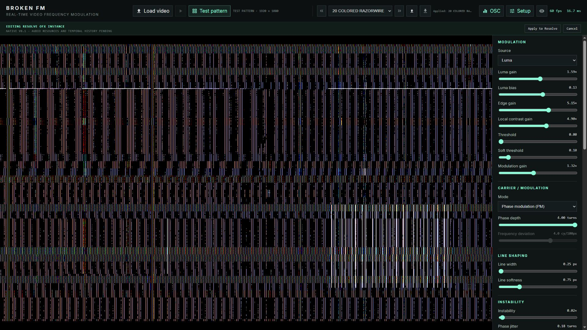
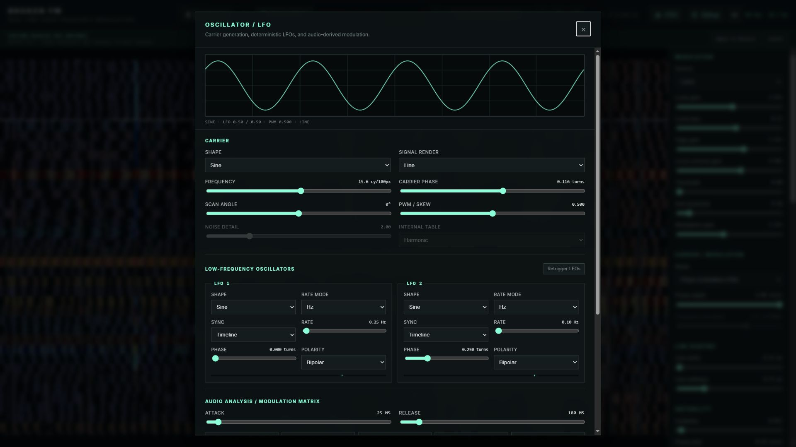
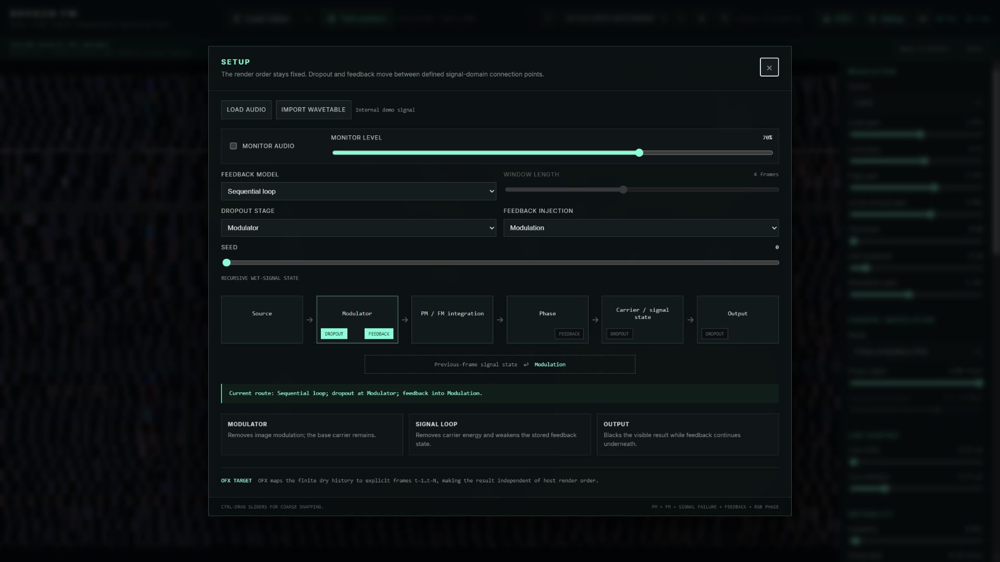
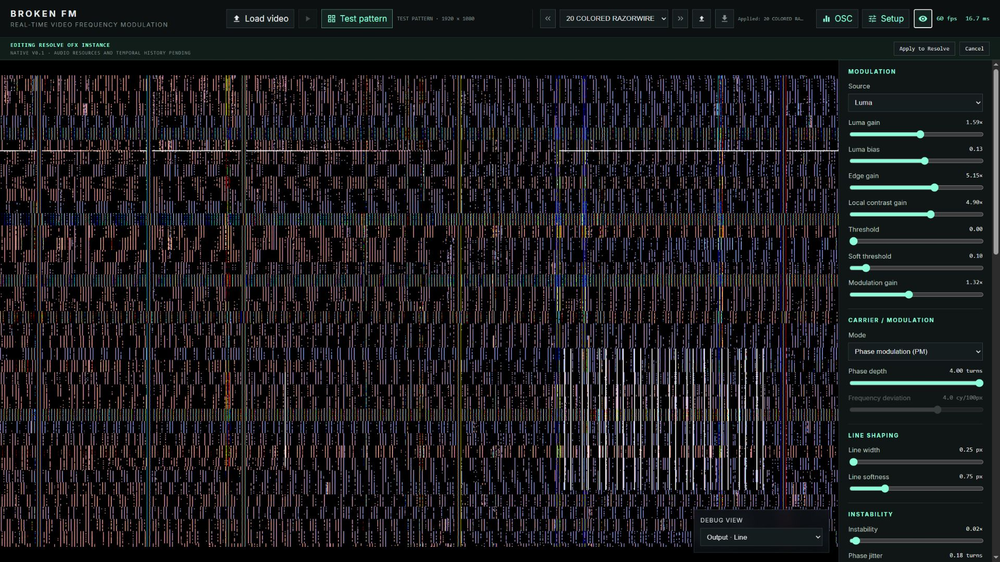

Start from a preset
Choose a factory preset in the header and step through the library with the previous/next buttons. Presets are complete effect states and are the fastest way to learn the available range.
BROKEN FM turns image structure into a generated electronic signal. It is not a displacement, crop, or scaling effect: source pixels are analyzed as modulation while the carrier is built in output pixel space. This manual describes the English Companion UI and the matching version-1 parameter contract for BROKEN FM 0.1.0.




Choose a factory preset in the header and step through the library with the previous/next buttons. Presets are complete effect states and are the fastest way to learn the available range.
After the safety warning is acknowledged, Test pattern is active and highlighted by default. Loading a video enables Play. Selecting Test pattern pauses the loaded video; pressing Play resumes the video and makes it the source.
Choose Mod Source, then balance its gain/bias and optional threshold. Set Modulation Gain to 0 whenever you want to inspect the dry carrier.
PM is local and immediate. FM accumulates change along Scan Angle and is usually more folded, torn, and direction-dependent.
Use Instability for signal failure, or open OSC to route deterministic LFO/audio sources to explicit destinations. A changing destination shows base value -> effective value.
Save JSON writes effect parameters only. In a Resolve OFX editing session, Apply to Resolve returns the current settings; Cancel leaves the plugin instance unchanged.
Load video opens a local source. Test pattern is active and highlighted by default; selecting it pauses loaded video. Play resumes video and makes it active. The preset controls step through 56 factory presets or load/save schema-16 JSON. OSC contains carrier/LFO/matrix controls. Setup contains session assets, Seed, and signal routing. Debug View is an optional lower-right overlay.
Normal dragging is fine-grained. Hold Ctrl while dragging for meaningful coarse snapping. Gray controls are inactive in the current mode. A matrix-modulated control shows base -> effective when its effective value differs.
Source analysis -> threshold/gain -> PM or scan-integrated FM -> carrier rendering -> color/output. Dropout can act at Modulator, Signal loop, or Output. Feedback can return into Modulation or Phase. Phosphor persistence is a display-only afterglow and never feeds the signal loop.
modSourceChooses the image feature that drives modulation: luminance, inverted luminance, edges, local contrast, or a luminance-plus-edge blend.
lumaGainMultiplies source luminance before centering it around the neutral midpoint. Higher values make tonal differences drive the carrier more strongly.
lumaBiasOffsets luminance before it becomes a modulation signal. Use it to choose which tonal region sits near the neutral carrier state.
edgeGainSets the strength of the extracted edge signal. It is most obvious with Edges or Luma + edges as Mod Source.
localContrastGainSets the strength of local brightness differences. Higher values emphasize texture and small regional changes rather than overall exposure.
modThresholdSuppresses modulation below the selected level. A value of 0 is an exact bypass; higher values isolate progressively stronger source features.
modSoftnessControls the transition width around Mod Threshold. At 0 the threshold is hard; higher values create a smoother gate. It has no visible effect when Threshold is 0.
modulationGainMaster gain for the conditioned image modulation before PM or FM. At 0 the source contributes no information to the generated signal.
modeSelects the signal model. PM adds the source value directly to carrier phase. FM integrates source-driven frequency changes along the selected scan direction, producing folds and accumulated bends.
frequencyBase carrier density in cycles per 100 output pixels along Scan Angle. Higher values create more closely spaced lines or waveform cycles.
carrierPhaseOffsets the carrier by whole turns without moving source pixels. Animate it to make the generated signal travel through the image.
carrierShapeSelects Sine, Triangle, Saw, Square, Noise, Wavetable, or Audio as the carrier. Audio requires a loaded audio source in the Companion preview.
signalRenderLine draws narrow contours at repeating carrier phases. Waveform displays the continuous bipolar signal as image intensity.
pwmChanges duty cycle for Square and skew/symmetry for Triangle and Saw-derived shapes. 0.5 is centered and symmetrical.
noiseDetailControls spatial detail for the Noise carrier. Low values make broad variations; high values make finer, faster-changing structure.
wavetableSelects the internal Harmonic, Folded, or Formant table, or the session-only imported Custom table. Custom data is not embedded in preset JSON.
phaseDepthPM depth in full turns. It controls how far image modulation bends carrier phase; 0 removes PM influence even if Modulation Gain is non-zero.
frequencyDeviationFM deviation in cycles per 100 pixels at full-scale modulation. Positive and negative values reverse the direction of accumulated frequency bending. Active only in FM mode.
scanAngleDirection in which the carrier and FM integral travel, from -180 degrees to 180 degrees. It rotates the signal coordinate, not the source image.
lineWidthApproximate on-screen thickness of Line render contours in pixels.
lineSoftnessAntialiasing and edge softness around Line render contours. 0 is crisp; larger values create broader, softer edges.
instabilityMaster amount for drift and jitter contributions. At 0 the clean PM/FM path is restored even when the individual instability controls have non-zero setup values.
phaseJitterAdds smooth, deterministic disturbance directly to carrier phase. It roughens and wriggles the signal without adding a visible noise overlay.
signalNoiseInjects deterministic broadband disturbance into signal phase. It produces RF-like breakup while remaining part of the carrier calculation.
frequencyDriftMaximum slow variation of carrier frequency in cycles per 100 pixels. Its motion rate is controlled by Drift Rate.
horizontalDriftMoves generated signal coordinates horizontally in pixel space. The source image is not resampled or translated.
verticalDriftMoves generated signal coordinates vertically in pixel space. Combine it with Horizontal Drift for wandering two-axis motion.
driftRateSpeed in hertz of frequency and coordinate drift fields. Low values wander slowly; high values hunt rapidly.
timeJitterPerturbs the internal signal clock by an amount expressed in frames. It affects procedural motion and failure timing, but does not select a different source-video frame.
lineJitterMaximum displacement of scan-line bands in pixels. This is the amplitude of horizontal-sync-like line movement.
lineJitterScaleWidth of the bands affected by Line Jitter. Small values produce fine buzzing lines; large values shift broader blocks together.
lineJitterSpeedTemporal speed in hertz of the Line Jitter pattern. 0 freezes the pattern for a given frame state.
dropoutProbability/intensity of deterministic missing-signal bands. The affected signal-domain location is selected by Dropout Stage.
dropoutAngleOrientation of dropout bands, independent of Scan Angle. Use a different angle to cross-cut the carrier structure.
lineTearMaximum discontinuous jump of the scan coordinate in pixels. It tears carrier phase and FM lookup together instead of shifting the finished image.
dropoutStageChooses where dropout enters the route: Modulator removes source modulation, Signal loop removes carrier energy and weakens stored feedback, and Output blacks only the visible result.
feedbackAmountCoupling strength of the stored signal returned to the current frame. 0 disables feedback.
feedbackDecayRetention applied to older signal state. Values near 1 create longer, more persistent echoes.
feedbackDisplacementMoves stored signal by pixels per age step before reinjection. It creates trails, conveyors, and drifting memory rather than a simple overlay.
feedbackDisplacementAngleDirection of feedback displacement from -180 degrees to 180 degrees.
feedbackPhaseRotates the stored waveform and quadrature pair in turns before reinjection. This changes echo phase and polarity without disguising the operation as gain.
feedbackInjectionPhase injects stored state after PM/FM integration. Modulation returns it before integration, so FM can accumulate and reshape the feedback.
feedbackModelSequential loop recursively uses the previous wet state and depends on linear playback. Finite window combines a bounded set of previous dry frames for a deterministic history length.
feedbackWindowNumber of previous dry frames, 1 through 8, used by Finite window. It is disabled for Sequential loop.
colorModeMono outputs one signal in all channels. Input color applies normalized source chroma to signal energy. RGB phase evaluates red, green, and blue at different carrier phases.
rgbPhaseOffsetPhase separation in turns between RGB channels. Active only in RGB phase mode; larger offsets create stronger color splitting.
blackLevelAdds or removes output pedestal before contrast, gamma, and brightness shaping. Negative values crush low signal; positive values lift black.
signalGammaNonlinear response of the generated signal. Values below 1 brighten mid-levels; values above 1 darken them.
brightnessFinal output gain after black level, contrast, and gamma. At 0 the visible output is black.
contrastExpands or compresses output around mid-gray before gamma. 1 is neutral.
phosphorPersistencePeak-hold afterglow half-life in milliseconds. It stores bright RGB emission while decaying older light; it never feeds back into the carrier or modulation path.
audioAttackRise time in milliseconds for Level, Low, Mid, High, and Transient analysis. Short attack follows hits quickly; long attack smooths their onset.
audioReleaseFall time in milliseconds for audio analysis. Long release holds energy after a sound; short release makes modulation drop quickly.
lfo1ShapeWaveform generated by LFO 1: Sine, Triangle, Saw, Square, stepped Sample & hold, or interpolated Smooth noise.
lfo1RateModeChooses free-running Hz or tempo-based BPM timing for LFO 1. Only the controls for the selected rate mode affect its speed.
lfo1SyncTimeline evaluates LFO 1 from absolute host time. Transport subtracts the most recent retrigger origin so playback/retrigger can restart its cycle.
lfo1RateHzFree-running speed of LFO 1 in cycles per second. Active when Rate mode is Hz.
lfo1BpmTempo used by LFO 1 for musical timing. Active when Rate mode is BPM.
lfo1DivisionMusical cycle length for LFO 1, from two bars to 1/32. In 4/4, 1/4 produces one cycle per beat.
lfo1PhaseStarting phase of LFO 1 in turns. 0.25 is a quarter-cycle offset and 0.5 is half a cycle.
lfo1PolarityBipolar maps LFO 1 to -1...+1 for motion around the base value. Unipolar maps it to 0...+1 for one-direction modulation.
lfo2ShapeWaveform generated by LFO 2: Sine, Triangle, Saw, Square, stepped Sample & hold, or interpolated Smooth noise.
lfo2RateModeChooses free-running Hz or tempo-based BPM timing for LFO 2. Only the controls for the selected rate mode affect its speed.
lfo2SyncTimeline evaluates LFO 2 from absolute host time. Transport subtracts the most recent retrigger origin so playback/retrigger can restart its cycle.
lfo2RateHzFree-running speed of LFO 2 in cycles per second. Active when Rate mode is Hz.
lfo2BpmTempo used by LFO 2 for musical timing. Active when Rate mode is BPM.
lfo2DivisionMusical cycle length for LFO 2, from two bars to 1/32. In 4/4, 1/4 produces one cycle per beat.
lfo2PhaseStarting phase of LFO 2 in turns. 0.25 is a quarter-cycle offset and 0.5 is half a cycle.
lfo2PolarityBipolar maps LFO 2 to -1...+1 for motion around the base value. Unipolar maps it to 0...+1 for one-direction modulation.
audioSource1Source for modulation slot 1: Off, audio Level/Low/Mid/High/Transient analysis, LFO 1, or LFO 2. Audio sources require audio in the Companion preview.
audioDestination1Parameter controlled by modulation slot 1. Off disconnects the slot. A destination can receive multiple slots, which are summed before clamping.
audioAmount1Signed depth of modulation slot 1. Positive values follow the source; negative values invert it. 0 disables the slot without changing its source/destination choices.
audioSource2Source for modulation slot 2: Off, audio Level/Low/Mid/High/Transient analysis, LFO 1, or LFO 2. Audio sources require audio in the Companion preview.
audioDestination2Parameter controlled by modulation slot 2. Off disconnects the slot. A destination can receive multiple slots, which are summed before clamping.
audioAmount2Signed depth of modulation slot 2. Positive values follow the source; negative values invert it. 0 disables the slot without changing its source/destination choices.
audioSource3Source for modulation slot 3: Off, audio Level/Low/Mid/High/Transient analysis, LFO 1, or LFO 2. Audio sources require audio in the Companion preview.
audioDestination3Parameter controlled by modulation slot 3. Off disconnects the slot. A destination can receive multiple slots, which are summed before clamping.
audioAmount3Signed depth of modulation slot 3. Positive values follow the source; negative values invert it. 0 disables the slot without changing its source/destination choices.
audioSource4Source for modulation slot 4: Off, audio Level/Low/Mid/High/Transient analysis, LFO 1, or LFO 2. Audio sources require audio in the Companion preview.
audioDestination4Parameter controlled by modulation slot 4. Off disconnects the slot. A destination can receive multiple slots, which are summed before clamping.
audioAmount4Signed depth of modulation slot 4. Positive values follow the source; negative values invert it. 0 disables the slot without changing its source/destination choices.
seedChanges all deterministic random fields used by noise, jitter, dropout, and related modulation. The same seed, frame, input, and parameters reproduce the same result.